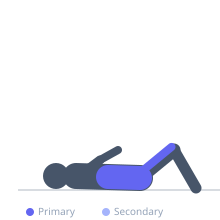

Exercise guide / Flutter Kick
Flutter Kick
Flutter kicks are a supine endurance core exercise borrowed from swimming training in which the athlete alternately raises and lowers each leg in a small, rapid, continuous motion while keeping both legs straight and the lower back pressed to the floor. The exercise trains the hip flexors and rectus abdominis under sustained anti-extension loading across a large number of repetitions, making it a popular conditioning finisher and military fitness staple.
Primary muscles
iliacus
psoas major
rectus abdominis
Secondary muscles
rectus femoris
transverse abdominis
Stabilizers
internal oblique
external oblique
Equipment
No Equipment (Bodyweight)


Starting position
- Lie flat on your back with arms at your sides or under the lower back for support. Legs extended, heels slightly off the floor.
Setup
- Use a mat for comfort. Place hands under the lumbar curve if lower back arching is an issue.
Steps
- Step 1: Lie supine with legs straight. Press the lower back into the floor.
- Step 2: Raise both feet approximately 15–30 cm off the floor.
- Step 3: Rapidly alternate kicking each leg up and down in small amplitude oscillations, like swimming freestyle.
- Step 4: Keep the lower back pressed to the floor throughout — if it arches, raise leg height.
- Step 5: Continue for the prescribed duration or rep count.
Coaching cues
- Press your back into the floor — there should be no gap
- Quick, small kicks — not big swings
- Point your toes and squeeze your quads
Breathing
- Breathe continuously in a relaxed rhythm throughout the set. Do not hold the breath.
Range of motion
- Legs move through a small arc of approximately 20–30 cm. The focus is speed and endurance, not amplitude.
Tempo
- Performed for time (20–60 seconds) or count (20–50 kicks per leg). Moderate to high speed.
Common mistakes
- Allowing the lower back to arch away from the floor
- Using too large an amplitude — small, rapid kicks are correct
- Relaxing the leg muscles and letting the knees bend
Safety
- If the lower back arches despite effort, raise leg height or place hands under the lower back as a proprioceptive cue.
- Not suitable during acute lower back pain flare-ups.
Training
- endurance: 20–50 reps
- endurance: 3–5 sets
- Rest: {'endurance': 45}